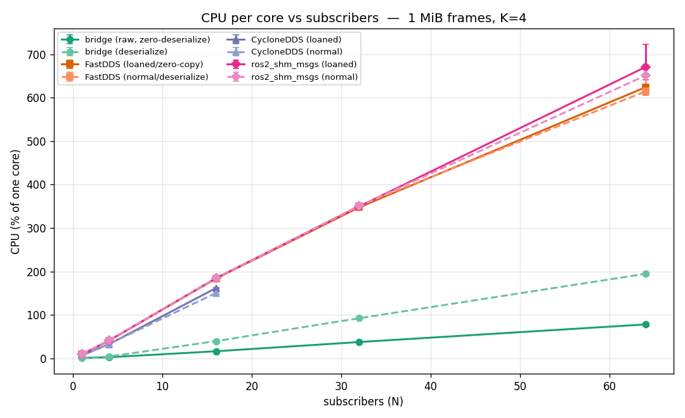
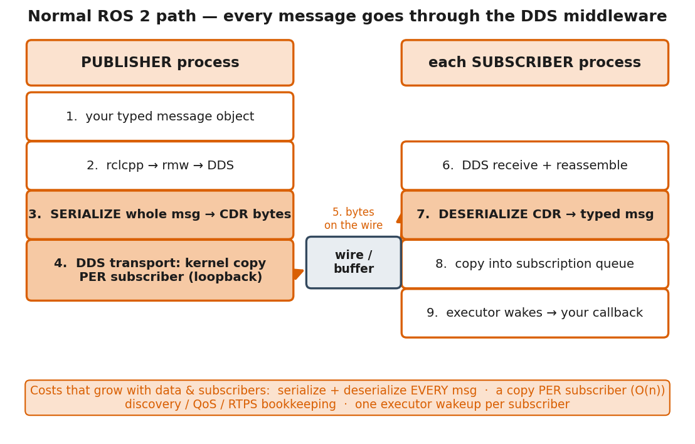
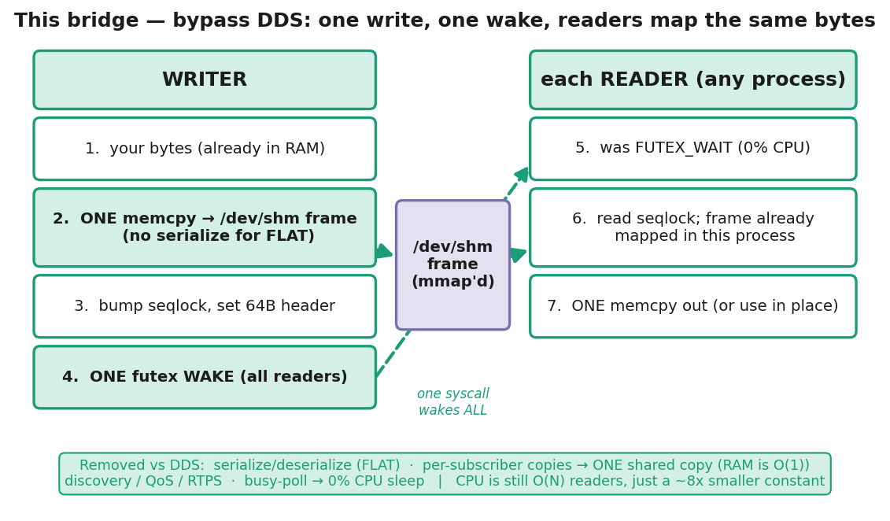
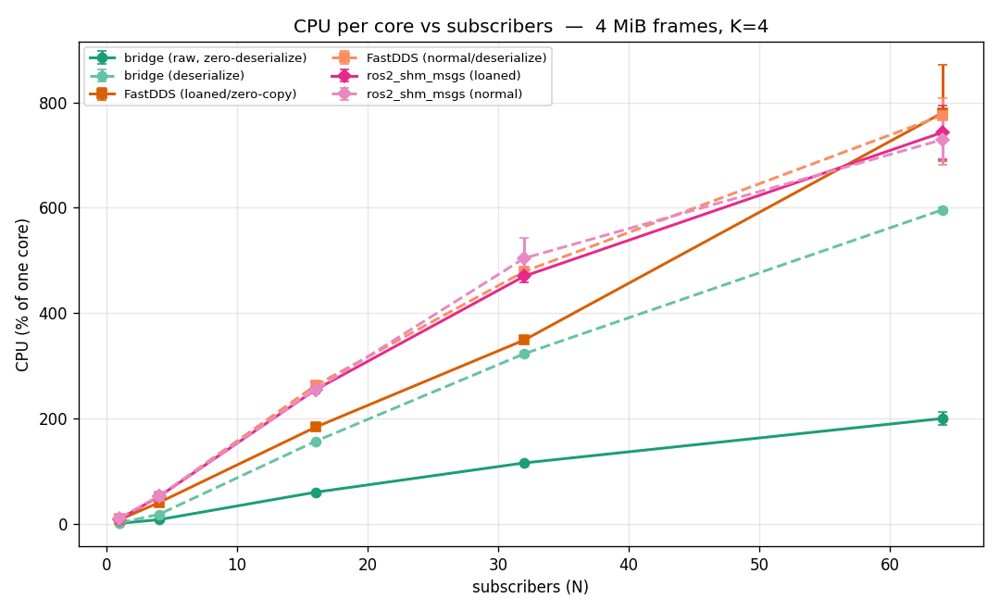
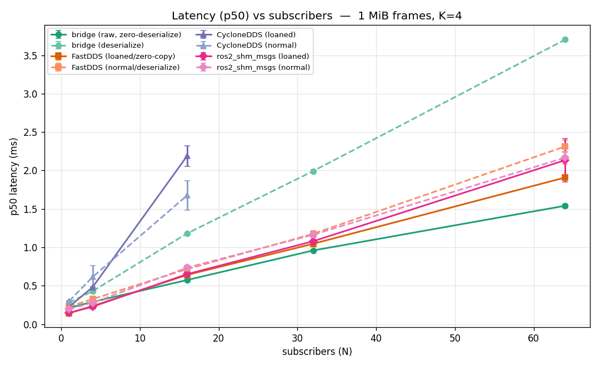
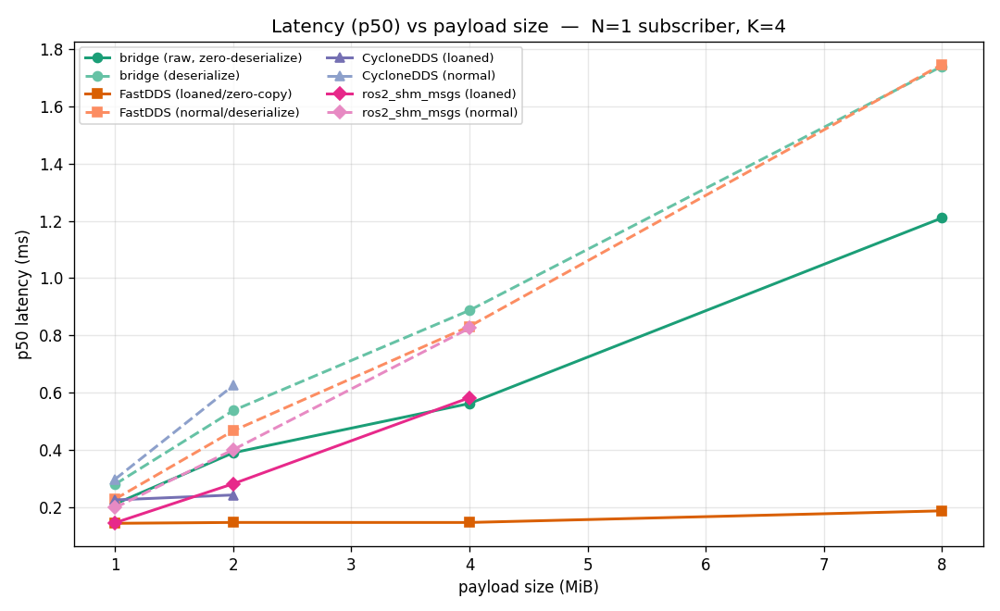
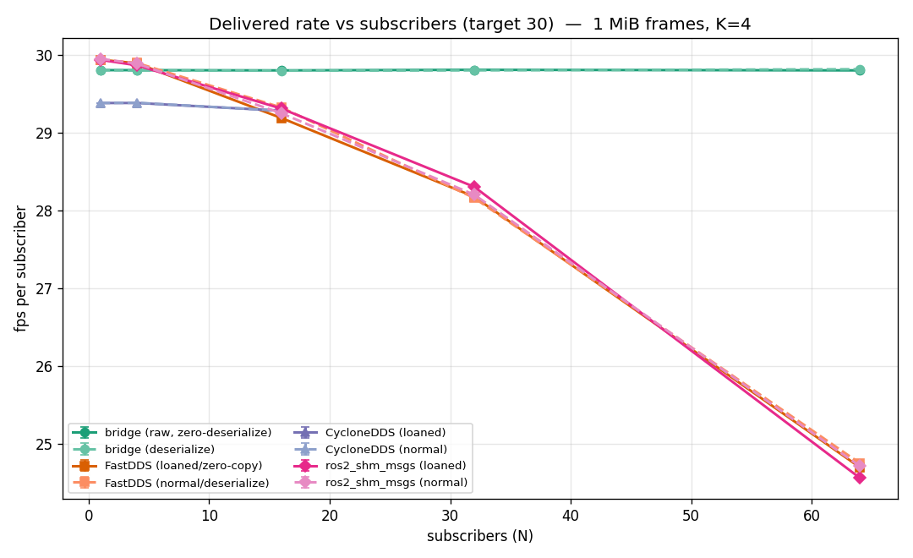
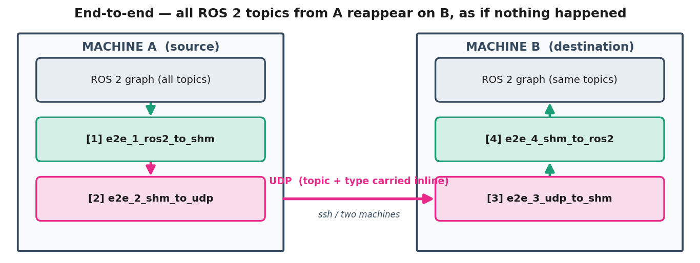

Systems / Robotics Infrastructure · C++17 · Python · ROS 2 (Humble) · Linux shared memory · seqlock + futex

1 · The Problem I Hit
A few months ago I was running a perception setup in NVIDIA Isaac Sim that should have been simple, and it brought my machine to its knees. I had multiple simulated camera feeds, and a stack of models that each needed every feed — YOLO, GroundedDINO, Florence, and a set of LLM APIs. So I tried to wire it up the standard way: package each model as a ROS 2 node, subscribe to the camera topics, let ROS 2 handle the plumbing. It didn't work out. As I scaled it up, the whole thing buckled.
The math was the problem. With N camera streams and K subscribers, every frame from every camera was getting serialized and copied to every consumer — so the transport load scaled as N×K. Three cameras into a handful of models wasn't a handful of streams; it was a multiplying wall of redundant copies, the same megabyte frames serialized and copied over and over, 30 times a second, per camera, per subscriber.
My CPU pinned to 100%. And the worst part wasn't even the dropped frames — it was that Isaac Sim itself started hanging under the load. The simulation couldn't keep real time, so the results coming out of it weren't even meaningful anymore. I wasn't measuring my models; I was measuring my transport choking.
So I went hunting, and the culprit wasn't my models or my code. It was the ROS 2 transport layer underneath — serialize-and-copy, per subscriber, per frame. So I built something to bypass it entirely.

2 · The Idea in One Paragraph
It's a same-host shared-memory transport. The producer writes one copy of each frame into /dev/shm, signals readers with a single futex wake, and every consumer maps the same physical pages and reads it in place. One write. One copy in memory, no matter how many models read it. No per-subscriber serialization, no per-subscriber copy, no middleware machinery, and idle readers sit at ~0% CPU instead of spinning. The N×K explosion collapses — the frame exists once, and everyone reads it where it sits.

/dev/shm, one FUTEX_WAKE for everyone, every reader maps the same physical pages.The structural difference: the writer's publish is O(1) — a single FUTEX_WAKE regardless of reader count — and RAM is O(1) in subscribers (one physical copy, mapped by all). Total delivery CPU is still O(N) readers, because each reader wakes and reads its own view — but with a ~8× smaller constant than DDS, and no busy-polling.
3 · How It Differs From the Industry Standards
I benchmarked against the three production zero-copy transports — FastDDS data-sharing, CycloneDDS+iceoryx, and ros2_shm_msgs. They are excellent, heavily optimized systems. The difference isn't that they're slow; it's that they're built around a general-purpose pub/sub model (discovery, QoS, per-subscriber delivery semantics) that carries overhead this specialized workload doesn't need.
| Concern | DDS transports | ros2_shm_fanout |
|---|---|---|
| per-subscriber copy | serialize + copy per subscriber | one physical copy, mapped by all |
| publish/notify cost | delivery work per subscriber | one FUTEX_WAKE for all (O(1)) |
| idle reader CPU | executor/poll overhead | ~0% (sleeps on a futex) |
| RAM vs subscriber count | grows with consumers | flat — O(1) |
| discovery / QoS machinery | full RTPS discovery + QoS state | none — a name in /dev/shm |
| non-ROS consumers | must join the ROS/DDS graph | any process that can mmap a file |
| single-subscriber latency | wins (loaned zero-copy) | copies bytes ⇒ O(size) |
Two design choices make the bridge ROS-agnostic in a way the DDS stacks aren't:
- The writer can pull from a ROS 2 topic, but the reader doesn't need ROS at all. The FLAT path writes raw frame bytes with a small binary header + a JSON recipe — not a ROS-serialized blob. So a plain Python script, a CUDA program, or a model server in a separate conda env can read your camera frames directly: zero ROS overhead, zero bridging.
- This matters because not every CV model ships as a ROS 2 package — and plenty of the newest perception and foundation models never will. They arrive as Python libraries, inference servers, or API wrappers. This lets you feed them the live stream without forcing them into the ROS graph first.
Where the standards still win: for a single subscriber, the established DDS methods have the edge on latency — they're heavily optimized for that case, and true loaned zero-copy hands over a pointer (nothing is copied). The bridge's advantage is CPU efficiency across every process, and it pulls further ahead as the number of subscribers grows. Which is exactly the problem I started with: many cameras, many models, one machine.
4 · How It Works — The On-Disk Contract
Each named stream NAME is three files in /dev/shm. Two metadata channels at two rates — a fast binary header per frame, a slow JSON recipe only on structural change — is what gives both low latency and correctness.
| File | What | Update rate |
|---|---|---|
| NAME_header | 64-byte binary header, mmap'd, fixed offsets | every frame (atomic) |
| NAME_frame | raw payload (FLAT buffer or CDR bytes) | every frame |
| NAME_recipe.json | human-readable decode recipe (topic, type, shape) | only on structural change |
The 64-byte header carries seq, encoding_id, data_size, width/height/channels, dtype_id, timestamp_ns, and a type-name hint. Because data_size lives in the header, payload sizes can vary every frame at zero cost — no recipe rewrite.
The seqlock (lock-free, the writer never blocks)
The writer never waits on readers:
// writer publish
seq++; // now ODD = "a write is in progress"
memcpy(frame, payload, len); // one copy into shared memory
fill_header(...);
seq++; // now EVEN = "stable / published"
notify(); // one FUTEX_WAKE releases ALL waiting readersA reader does read seq → read body → re-read seq; the frame is valid only if both reads saw the same even value — otherwise it caught a write in progress and retries. Classic seqlock: correct for one writer + many readers, and the writer is favored so it never stalls.
Wakeup: a futex, not a busy-poll
A naive reader would spin-read the seq counter, burning a core each. Instead the header's seq word doubles as a futex: after publishing, the writer issues one FUTEX_WAKE that releases every waiting reader at once. Readers FUTEX_WAIT at ~0% CPU until woken. This is the source of the gentle CPU slope.
FLAT vs CDR — two encodings, one generic reader
| Encoding | Count | What | Reconstructed as |
|---|---|---|---|
| FLAT (zero-copy) | 25 | heavy numeric buffers (image / cloud / grid / tensor) | numpy ndarray (zero-copy view) |
| CDR (universal) | 305 | every other topic type — structs, nested, variable-length | rebuilt ROS message object |
| Total | 330 | all topic message types | — |
Adding a new type costs nothing on the universal path: CDR needs no per-type code — serialize_message / deserialize_message handle all 305 generically; you just point a writer at the topic. FLAT is an opt-in fast path with a small per-type extractor. The reader never changes.
A ROS-agnostic core with thin adapters
The library is split into a ROS-free core (libshm_bridge_cpp.so — seqlock + futex + the byte contract, no ROS/DDS/deps) and small adapters that plug one outside world into it. An ingest adapter subscribes in the foreign API and calls Writer::write_flat(...); an egress adapter calls Reader::wait_and_read(...) and forwards the frame. Want a ROS 1 bridge, a GStreamer source, a UDP server? Write one small .cpp — the core never changes.
5 · The Graphs, Explained
CPU vs subscribers (1 MiB) — the headline
At N=64 the bridge raw path sits at 78% of one core; FastDDS / ros2_shm_msgs are at ~620–670% (~6–7 cores). This is the futex payoff: readers sleep until woken (no busy-poll), so the per-subscriber CPU constant is small. The win is a lower slope, not a lower complexity class. RAM, by contrast, is O(1) — flat ~43–45% across N=1→64 — because all readers map one shared copy.
CPU vs subscribers (4 MiB) — the story holds at larger sizes

Latency vs subscribers (1 MiB) — the crossover

Latency vs payload size (N=1) — O(1) zero-copy vs O(size) copy

Delivered rate vs subscribers (1 MiB) — integrity under load

6 · How the Benchmarks Were Run
The harness follows the conventions of Apex.AI performance_test — the de-facto ROS 2 transport benchmark — plus standard latency-benchmark hygiene:
- Apples-to-apples modes: every transport tested in both a zero-copy / loaned / raw mode (consumer gets a pointer) and a normal / deserialize mode (consumer rebuilds a typed message each frame). The bridge's
raw_flatanddeserializematch the DDS loaned/normal split exactly. - Coordinated-omission-safe: fixed 30 Hz publish on an absolute schedule (
sleep_until(t0 + k·period)) — a late frame still gets its true timestamp. - In-payload timestamp:
CLOCK_MONOTONICstamped into the first 8 bytes at publish, read at receipt → end-to-end latency per frame. - Percentiles, not just mean: p50 / p90 / p99 / p99.9 / max per run; first 20% of samples trimmed for warm-up.
- K=4 repeated runs → mean ± standard deviation (the error bars).
- Whole-system-fair CPU: the headline CPU is the pid-set sum (benchmark process + the iox-roudi daemon for CycloneDDS), so DDS gets no free ride for work it offloads to a daemon.
- Byte-identical payloads across all four transports at each size rung.
The grid: payload sizes 1 / 2 / 4 / 8 MiB × subscriber counts N = 1, 4, 16, 32, 64 × ~8 transport-modes × K=4 runs ≈ hundreds of runs, hundreds of thousands of individually-timed frames. Each data point is ~300 frames/subscriber × 4 runs. Test machine: an 8-core / 12-thread laptop (i5-13420H), governor powersave (which inflates absolute milliseconds equally across all transports, so the comparison stays fair and the absolute numbers are conservative).
Observed failure modes
| Transport | What happened under load |
|---|---|
| CycloneDDS + iceoryx | SIGABRT (invalid allocator) at N=32; couldn't start at all for 4/8 MiB — RouDi mempool can't hold those chunks. Least robust. |
| ros2_shm_msgs | SIGSEGV at N=1 for the 8 MiB fixed type; CPU-gated at larger N. FastDDS underneath, so it inherits ~10%/sub plus extra fragility. |
| FastDDS | Never crashed, but hit the 95% CPU gate at N=64 for larger sizes — it runs out of cores, not memory. |
| bridge | Only the deserialize mode at 8 MiB / N=64 gated (~10 cores doing per-frame 8 MiB copies × 64); the raw path never gated anywhere. |
Why this is the floor, not the ceiling
These gaps were measured intra-process — pub + subs as threads in one address space — the most forgiving possible setup. That removes the costs DDS pays in production: participant discovery, N+1 executors competing for cores, and cross-process copies. Real robots run each model as its own process, often across separate machines, where that overhead stacks up fast. Everything the controlled benchmark removed is overhead the DDS stack pays in deployment and the shared-memory path mostly doesn't — the bridge's Writer/Reader already work across processes unchanged.
So the advantage shown here is the floor, not the ceiling. On a real multi-process, multi-machine deployment, the gap is expected to widen — and on real hardware, every core you're not spending on moving bytes is a core left for inference, planning, and control. On battery and edge robots, that's directly less power drawn and more thermal headroom.
7 · Building & Coding With It
Use the library with zero build (a clone ships a prebuilt x86-64 .so)
git clone https://github.com/rajpcrj/ros2_shm_fanout.git
cd ros2_shm_fanout
g++ -std=c++17 my.cpp -o my -Iprebuilt/include -Lprebuilt/lib -lshm_bridge_cpp -lpthread
LD_LIBRARY_PATH=$PWD/prebuilt/lib ./my
# or install it system-wide, then no -I/-L needed anywhere:
./install_lib.sh # cp .so + headers -> /usr/local + ldconfigBuild from source (ROS nodes + benchmarks)
source /opt/ros/humble/setup.bash
colcon build --packages-select shm_bridge_cpp --cmake-args -DCMAKE_BUILD_TYPE=Release
source install/setup.bashThe whole library API — write and read a frame
// produce: one copy into shared memory
#include <shm_bridge_cpp/shm_bridge.hpp>
shm_bridge::Writer w("rgb", 1920*1080*4);
w.write_flat(ptr, len, W, H, 3, shm_bridge::DType::U8,
"sensor_msgs/msg/Image"); // 1 copy in, then one FUTEX_WAKE
// consume: ~0% CPU until a new frame, then read it in place
shm_bridge::Reader r("rgb");
shm_bridge::Frame f;
while (running) {
if (r.wait_and_read(f, 100ull*1000*1000)) // 100 ms timeout
use(f.data, f.width, f.height, f.seq); // f.seq gaps = dropped frames
}Run anything (ROS ↔ SHM ↔ ROS, or pure C++ with no ROS)
# pure C++ (no ROS), bundled sample image:
ros2 run shm_bridge_cpp ex_write_cpp & ros2 run shm_bridge_cpp ex_read_cpp
# ROS topic -> SHM -> ROS topic:
ros2 run shm_bridge_cpp ex_ros2_to_shm --ros-args -p topic:=/image -p stream:=rgb
ros2 run shm_bridge_cpp ex_shm_to_ros2 --ros-args -p stream:=rgb -p topic:=/from_shmPython talks the same /dev/shm contract — no .so linking
export PYTHONPATH=src/shm_bridge_python:$PYTHONPATH
python3 examples/python/write_py.py demo & # Python writer
python3 examples/python/read_py.py demo # Python reader — OR read it from C++ read_cpp!Because the on-disk bytes are identical, a C++ writer is read by a Python reader and vice-versa, with zero glue code — Python uses mmap + numpy.frombuffer (a zero-copy view). If you specifically want Python to drive the C++ wait_and_read futex (true 0% CPU blocking), there's a pybind11 wrapper too.
8 · Example Use Cases
- One camera → many consumers on one PC. The original problem: a single feed into detection + segmentation + depth + pose + classification, with no per-model copy tax.
- Feed a non-ROS program (inference server, GUI, logger). Any process that can
mmapa file reads the stream — a separate conda env, a CUDA program, a foundation-model API wrapper — with zero ROS in the loop. - Send ROS topics to another computer. Read locally, push the raw bytes over a UDP server (
shm_to_udp) — no discovery handshake, no CDR on the hot path, lowest-overhead one-way hop on a clean LAN. - Stream raw frames to many network clients. A tiny UDP server binds a port and fans the raw
/dev/shmbytes straight onto the wire to any number of subscribing clients. - Bridge between C++ and Python. The shared contract is the API — either language reads the other's streams natively.
- Embed the library in your own app. The ROS-free core installs system-wide; link
-lshm_bridge_cpp -lpthreadand you have the transport in any C++ program. - Reproduce / extend the benchmarks. The full harness, raw
sweep.csv, and graph generator ship in the repo.
9 · How It Was Built
The repo began as loose scripts moving RealSense RGB + depth out of ROS topics into shared memory. It grew, in gated phases — each one proven by a working test before moving on — into a generic, type-agnostic transport.

| Phase | What was decided |
|---|---|
| 1 · Restructure | Split into two real ROS 2 packages (ament_cmake C++ + ament_python) so one colcon build builds both. |
| 2 · Design | The hard conversation about what "type-agnostic" can mean. Conclusion: the reader can be generic; the writer cannot — type knowledge concentrates in the writer + recipe. Rendering all types is impossible (a schema gives fields, never visual meaning), so scope became reconstruct the message, not render it. |
| 3 · The contract | The core invention: the three-file /dev/shm layout, the 64-byte binary header, and the seqlock. The counter had to be binary and atomically addressable — which is why it lives in the header, not the JSON. |
| 4 · Python first | rclpy introspection is easier, so the recipe format was nailed in Python and proven offline (11/11: FLAT round-trip, CDR round-trip on a nested type, and seqlock tear rejection) before porting. |
| 5 · Port to C++ | All four cross-language combinations verified live (Py→C++, C++→Py, FLAT, CDR) — the contract is only real if both languages interoperate byte-for-byte. |
| 6 · Classify every type | An offline tool read every installed .msg: 330 topic types split into 25 heavy/FLAT carriers vs 305 CDR. A key point settled here: CDR needs no per-type adapter — it's already universal. |
| 7 · One adapter, per-stream processes | A single adapt() entry point, auto-resolving each topic's type from the graph, one OS process per stream for isolation, plus an --all supervisor that spawns one process per live topic. |
| 8 · Full FLAT in C++ | Typed zero-copy extractors for the heavy types in C++ to match Python — each returning a pointer into the message buffer, no copy. |
The throughline: the writer owns type knowledge (encode), the reader is generic (decode by recipe), and this asymmetry is enforced everywhere. CDR is the universal backstop; FLAT is the opt-in fast path. Adding a new stream is either "just list the topic" (CDR) or "add one extractor" (FLAT) — the reader never changes.
10 · Tech Stack & Scope
- C++17 core — lock-free seqlock writer +
FUTEX_WAKEsignalling, zero ROS/DDS deps. - Linux shared memory (
/dev/shm,mmap) — one physical copy, mapped by all readers. - ROS 2 (Humble) — type-agnostic writer covering all 330 topic message types (FLAT zero-copy + CDR fallback) via
GenericSubscription. - Python adapter speaking the same
/dev/shmcontract, plus a pybind11 wrapper. - POSIX UDP adapters for the cross-machine hop (fire-and-forget + a multi-client server).
- Benchmark harness following Apex.AI
performance_testmethodology, with raw data + reproducible graph generation.
Scope: the win is CPU + memory + delivery integrity at fan-out on a single machine — not single-subscriber latency, and not a cross-machine transport by itself (/dev/shm is local; the UDP adapters carry it across the network). For single-reader minimum latency, DDS data-sharing is competitive or better. This bridge's win is CPU and scale.
Full methodology, data, graphs, and reproduction steps on GitHub →